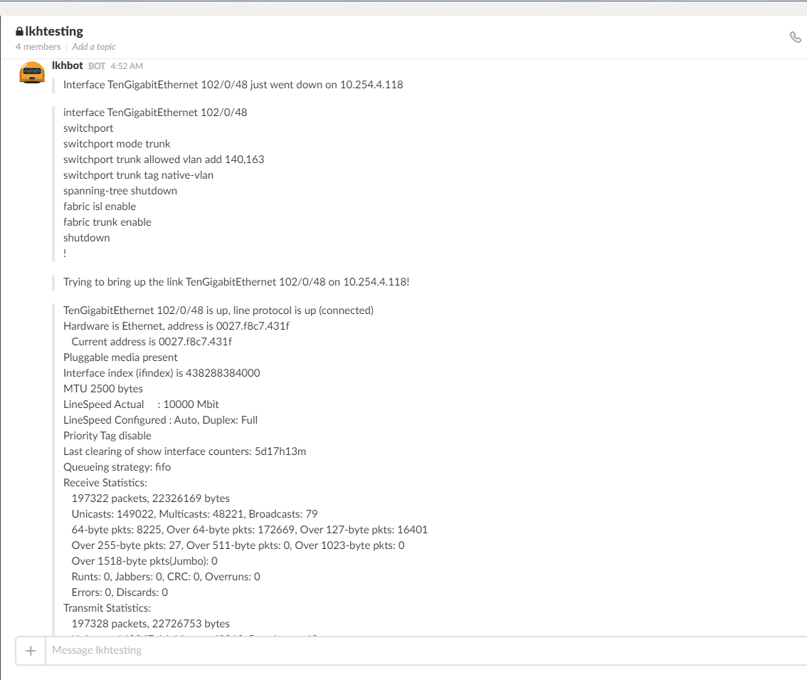

Oct 21, 2016
by Siddharth Krishna
Splunk is a great tool for collecting and analyzing log data. StackStorm is a great tool for automated event-driven remediation. So what happens when we stick them together? Here’s how to use Splunk to collect syslog data and trigger event-based network remediation workflows using StackStorm!
Syslog for events and errors from the network devices can be tapped to trigger troubleshooting and auto-remediation actions on those devices. For example, if a ‘link down’ event occurs, the syslog message can be used to auto-trigger an action that would log into the device and try to bring the interface back up. In parallel, an IT ticket can also be auto-created with the relevant interface details. Notification of the event and the automated workflow can optionally be sent to a Slack channel (ChatOps).
One option is to have StackStorm itself act as the syslog server and run a sensor that polls the log file to match specific log strings. This method, although workable, has its performance limitations, and it doesn’t give us a nice tool for searching historical logs. Instead we can use something like Splunk, which is a log aggregation and analysis system. Splunk includes alert functionality – we can filter syslog messages, extract relevant fields, and trigger actions such as making a webhook request to StackStorm.
Here’s how to configure an auto-remediation workflow using Brocade VDX switches, Splunk and StackStorm:
NB this guide assumes that you have a working StackStorm/BWC system, and a Splunk server.
Configure all VDX switches to send syslog messages to the Splunk server:
logging syslog-server <splunk-ip-address> use-vrf mgmt-vrf
We’re using the default Splunk Search & Reporting App here. You could also use the Brocade Splunk App.

If your server does not currently accept syslog input, add it by going to:
Settings -> Data -> Data Inputs -> UDP -> New
Input UDP port 514 (default syslog port) and Source Type as ‘syslog’
Refer here for more on configuring data inputs on Splunk.
Splunk should now start displaying live syslog events from the switches in its search result.
Search -> Data Summary -> Search Type: syslog

Use the output of show logging raslog on a switch to identify an event or error of interest from its log string. In this case, we want to dynamically detect and act upon a link flap for which we need to tap syslog
[NSM-1003], 48201, SW/0 | Active | DCE, INFO, LEAF2, Interface TenGigabitEthernet 102/0/48 is link down.
| LEAF2# show logging raslog reverse count 10 | |
| NOS: 7.0.1 | |
| 2016/10/11-12:13:31, [NSM-1019], 48207, SW/0 | Active | DCE, INFO, LEAF2, Interface TenGigabitEthernet 102/0/48 is administratively up. | |
| 2016/10/11-12:13:27, [SEC-1203], 48206, SW/0 | Active, INFO, LEAF2, Login information: Login successful via TELNET/SSH/RSH. IP Addr: 10.254.2.86. | |
| 2016/10/11-12:13:27, [SEC-1206], 48205, SW/0 | Active, INFO, LEAF2, Login information: User [admin] Last Successful Login Time : Tue Oct 11 12:13:20 2016. | |
| 2016/10/11-12:13:23, [SEC-3022], 48204, SW/0 | Active, INFO, LEAF2, Event: logout, Status: success, Info: Successful logout by user [admin]. | |
| 2016/10/11-12:13:20, [SEC-1203], 48203, SW/0 | Active, INFO, LEAF2, Login information: Login successful via TELNET/SSH/RSH. IP Addr: 10.254.2.86. | |
| 2016/10/11-12:13:20, [SEC-1206], 48202, SW/0 | Active, INFO, LEAF2, Login information: User [admin] Last Successful Login Time : Tue Oct 11 12:12:23 2016. | |
| 2016/10/11-12:13:16, [NSM-1003], 48201, SW/0 | Active | DCE, INFO, LEAF2, Interface TenGigabitEthernet 102/0/48 is link down. | |
| 2016/10/11-12:13:16, [NSM-1020], 48200, SW/0 | Active | DCE, INFO, LEAF2, Interface TenGigabitEthernet 102/0/48 is administratively down. |
On splunk, create a search criteria to filter out the event. Here, we use the following:
sourcetype=syslog NSM-1003 process=raslogd | fields + host, interface, syslog_text

Stricter search criteria are recommended for greater filter accuracy. Once your search pattern is set up correctly, save it as a Splunk Alert with alert type as “Real-time” in order to capture the event live.
Save As -> Alert | Alert-type: Real-time, Trigger alert when: Per-Result

Splunk provides multiple options for Trigger Actions – Run a script, Send an Email, Webhook. You can run a script that makes a cURL call to StackStorm webhook URL or, for simplicity, use Splunk’s webhook option. StackStorm’s custom webhook URL is:
https://{STACK_STORM_HOSTNAME}/api/v1/webhooks/splunk_link_flap?st2-api-key=XXXXXXXXXXXXXXXXXXXXXXXX
For successful action execution, relevant fields or parameters need to be correctly extracted from the event log message and passed via the webhook call to StackStorm. For example, to be able to auto-remediate a ‘link down’ event i.e. do a “shut; not shut” on the switch, the switch’s IP address and an interface name are must. Splunk’s field extraction capability is useful in auto-generating regexp to pull out the field values from the log string. These “field:value” pairs are then passed in the webhook JSON payload. More on field extractions can be found here.

A custom webhook rule mapping the webhook trigger to the action workflow is created within StackStorm/BWC.
The custom webhook rule for ‘link flap’ defines the following:
| [email protected]:~$ st2 rule list --pack=st2-demos | |
| +-----------------------------------------+-----------+--------------------------------+---------+ | |
| | ref | pack | description | enabled | | |
| +-----------------------------------------+-----------+--------------------------------+---------+ | |
| | st2-demos.splunk_bgp_down_webhook_rule | st2-demos | Splunk bgp down webhook rule | True | | |
| | st2-demos.splunk_link_flap_webhook_rule | st2-demos | Splunk link flap webhook rule | True | | |
| | st2-demos.splunk_webhook_rule | st2-demos | splunk to chatops webhook Rule | True | | |
| +-----------------------------------------+-----------+--------------------------------+---------+ |
splunk_link_flap.yaml
| --- | |
| name: "splunk_link_flap_webhook_rule" | |
| enabled: true | |
| description: "Splunk link flap webhook rule" | |
| trigger: | |
| type: "core.st2.webhook" | |
| parameters: | |
| url: "splunk_link_flap" | |
| criteria: {} | |
| action: | |
| ref: st2-demos.link_flap_remediation | |
| parameters: | |
| host: "{{trigger.body.result.host}}" | |
| interface: "{{trigger.body.result.interface}}" |
| [email protected]:~$ st2 rule get st2-demos.splunk_link_flap_webhook_rule | |
| +-------------+------------------------------------------------------------+ | |
| | Property | Value | | |
| +-------------+------------------------------------------------------------+ | |
| | id | 57f66fcb0048394cfa1d955a | | |
| | uid | rule:st2-demos:splunk_link_flap_webhook_rule | | |
| | ref | st2-demos.splunk_link_flap_webhook_rule | | |
| | pack | st2-demos | | |
| | name | splunk_link_flap_webhook_rule | | |
| | description | Splunk link flap webhook rule | | |
| | enabled | True | | |
| | action | { | | |
| | | "ref": "st2-demos.link_flap_remediation", | | |
| | | "parameters": { | | |
| | | "interface": "{{trigger.body.result.interface}}", | | |
| | | "host": "{{trigger.body.result.host}}" | | |
| | | } | | |
| | | } | | |
| | criteria | | | |
| | tags | | | |
| | trigger | { | | |
| | | "type": "core.st2.webhook", | | |
| | | "ref": "core.70b0b76b-5edf-47d8-bb03-19528c4fe1d2", | | |
| | | "parameters": { | | |
| | | "url": "splunk_link_flap" | | |
| | | } | | |
| | | } | | |
| | type | { | | |
| | | "ref": "standard", | | |
| | | "parameters": {} | | |
| | | } | | |
| +-------------+------------------------------------------------------------+ |
When the ‘link down’ syslog is detected by Splunk, and the webhook to StackStorm called, the trigger instance payload contains the values for the various Splunk fields and parameters. These include the host IP address and the interface name (as per configured field extractions) along with other standard ones such as search link, search ID, raw log message etc. See this example below:
| [email protected]:~$ st2 trigger-instance get 57fcd76500483912504332d3 | |
| +-----------------+--------------------------------------------------------------+ | |
| | Property | Value | | |
| +-----------------+--------------------------------------------------------------+ | |
| | id | 57fcd76500483912504332d3 | | |
| | trigger | core.70b0b76b-5edf-47d8-bb03-19528c4fe1d2 | | |
| | occurrence_time | 2016-10-11T12:13:25.078000Z | | |
| | payload | { | | |
| | | "body": { | | |
| | | "results_link": "http://Splunk:8000/app/search/searc | | |
| | | h?q=%7Cloadjob%20rt_scheduler__admin__search__testt_at_14757 | | |
| | | 23889_25.32%20%7C%20head%201%20%7C%20tail%201&earliest=0&lat | | |
| | | est=now", | | |
| | | "app": "search", | | |
| | | "search_name": "testt", | | |
| | | "result": { | | |
| | | "_si": "", | | |
| | | "_confstr": | | |
| | | "source::udp:514|host::10.254.4.118|syslog", | | |
| | | "_raw": "Oct 11 05:13:24 10.254.4.118 Oct 11 | | |
| | | 12:13:16 LEAF2 raslogd: [[email protected] | | |
| | | value="RASLOG"][[email protected] | | |
| | | value="2016-10-11T12:13:16.980022"][[email protected] | | |
| | | value="NSM-1003"][[email protected] value="48201"][[email protected] | | |
| | | value=" SW/0 | Active | DCE | WWN | | |
| | | 10:00:00:27:f8:c7:42:e9"][[email protected] | | |
| | | value="INFO"][[email protected] value="LEAF2"][[email protected] | | |
| | | value="TenGigabitEthernet 102/0/48" desc="InterfaceName"] | | |
| | | BOM Interface TenGigabitEthernet 102/0/48 is link down. ", | | |
| | | "_time": "1476188004", | | |
| | | "host": "10.254.4.118", | | |
| | | "_sourcetype": "syslog", | | |
| | | "syslog_text": "Interface TenGigabitEthernet | | |
| | | 102/0/48 is link down.", | | |
| | | "_kv": "1", | | |
| | | "interface": "TenGigabitEthernet 102/0/48", | | |
| | | "_indextime": "1476188004", | | |
| | | "_serial": "33" | | |
| | | }, | | |
| | | "sid": | | |
| | | "rt_scheduler__admin__search__testt_at_1475723889_25.32", | | |
| | | "owner": "admin" | | |
| | | }, | | |
| | | "headers": { | | |
| | | "X-Request-Id": "10e3026f-9586-464b- | | |
| | | aae2-a0984fa290f1", | | |
| | | "Accept-Encoding": "identity", | | |
| | | "X-Forwarded-For": "10.254.3.40", | | |
| | | "Content-Length": "1101", | | |
| | | "User-Agent": "Splunk/D54F2F0C- | | |
| | | CD71-490F-9050-7A6C8E09328B", | | |
| | | "Host": "bwc,bwc", | | |
| | | "X-Real-Ip": "10.254.3.40", | | |
| | | "Content-Type": "application/json" | | |
| | | } | | |
| | | } | | |
| | status | processed | | |
| +-----------------+--------------------------------------------------------------+ |
These field values can now be directly accessed from the StackStorm webhook rule using {{trigger.body.result.xxx}} e.g. {{trigger.body.result.host}}.
Upon successful enforcement, the rule executes the auto-remediation workflow with execution ID as shown below:
| [email protected]:~$ st2 rule-enforcement get 57fcd76500483912504332d7 | |
| +---------------------+-----------------------------------------+ | |
| | Property | Value | | |
| +---------------------+-----------------------------------------+ | |
| | id | 57fcd76500483912504332d7 | | |
| | rule.ref | st2-demos.splunk_link_flap_webhook_rule | | |
| | trigger_instance_id | 57fcd76500483912504332d3 | | |
| | execution_id | 57fcd76500483912504332d6 | | |
| | failure_reason | | | |
| | enforced_at | 2016-10-11T12:13:25.126358Z | | |
| +---------------------+-----------------------------------------+ |
In this example, the workflow for link flap remediation does the following:
show interface detail from the switch and post the output to Slack| [email protected]:~$ st2 execution get 57fcd76500483912504332d6 | |
| id: 57fcd76500483912504332d6 | |
| action.ref: st2-demos.link_flap_remediation | |
| parameters: | |
| host: 10.254.4.118 | |
| interface: TenGigabitEthernet 102/0/48 | |
| status: succeeded (24s elapsed) | |
| start_timestamp: 2016-10-11T12:13:25.152697Z | |
| end_timestamp: 2016-10-11T12:13:49.681257Z | |
| +--------------------------+------------------------+-------------------------------+------------------------+-------------------------------+ | |
| | id | status | task | action | start_timestamp | | |
| +--------------------------+------------------------+-------------------------------+------------------------+-------------------------------+ | |
| | 57fcd765004839121e5d8927 | succeeded (0s elapsed) | notify_on_slack | chatops.post_message | Tue, 11 Oct 2016 12:13:25 UTC | | |
| | 57fcd766004839121e5d8929 | succeeded (5s elapsed) | show_run_interface | clicrud.ops_command | Tue, 11 Oct 2016 12:13:26 UTC | | |
| | 57fcd76b004839121e5d892c | succeeded (1s elapsed) | send_show_run_interface_to_sl | chatops.post_message | Tue, 11 Oct 2016 12:13:31 UTC | | |
| | | | ack | | | | |
| | 57fcd76c004839121e5d892e | succeeded (1s elapsed) | bring_up_msg_to_slack | chatops.post_message | Tue, 11 Oct 2016 12:13:32 UTC | | |
| | 57fcd76e004839121e5d8931 | succeeded (6s elapsed) | bring_up_link | clicrud.config_command | Tue, 11 Oct 2016 12:13:34 UTC | | |
| | 57fcd775004839121e5d8933 | succeeded (4s elapsed) | show_interface_detail | clicrud.ops_command | Tue, 11 Oct 2016 12:13:41 UTC | | |
| | 57fcd779004839121e5d8936 | succeeded (0s elapsed) | send_interface_details_to_sla | chatops.post_message | Tue, 11 Oct 2016 12:13:45 UTC | | |
| | | | ck | | | | |
| | 57fcd77a004839121e5d8938 | succeeded (3s elapsed) | create_zendesk_tkt | zendesk.create_ticket | Tue, 11 Oct 2016 12:13:46 UTC | | |
| +--------------------------+------------------------+-------------------------------+------------------------+-------------------------------+ |

All code examples used here are available in the StackStorm st2_demos repo on GitHub.
This is just one example of a syslog-driven auto-remediation workflow. Workflows can be custom-built with actions and integrations for your environment. Use Jira instead of Zendesk? No problem! Quickly modify the workflow to use Jira instead! Use Hipchat? No problem, modify your st2chatops2 setup to use that! Easy.
What are you doing with event-driven remediation with StackStorm? Jump into our community and let us know!